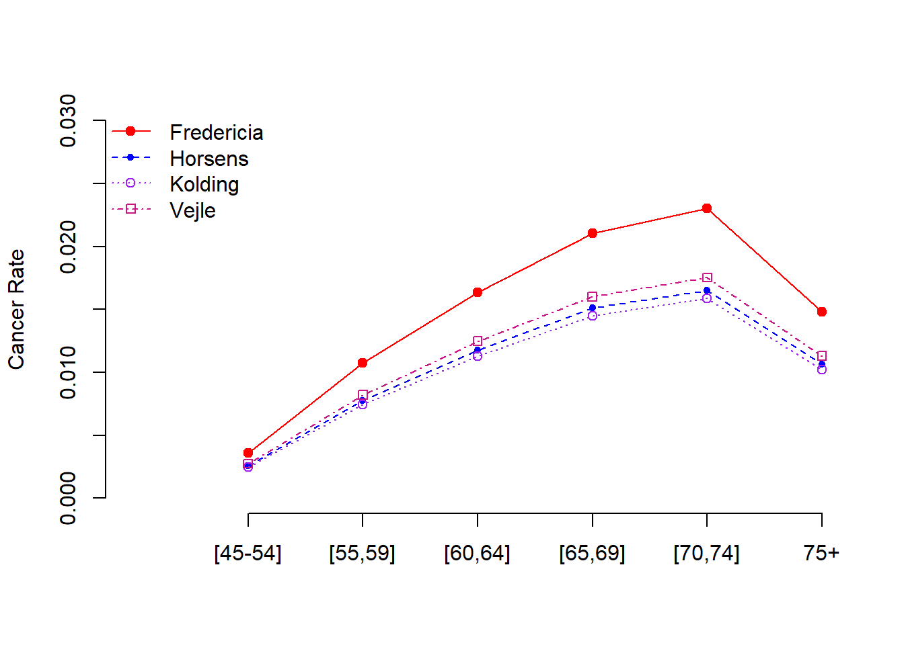

Topic 12 Poison Regression Modeling
We have studied the normal-based linear and binary logistic regression models dependent on the types of random response variables.
12.1 Linear Regression Models
The primary regression models are normal linear models. The basic distributional assumption is that the residuals follow a normal distribution with mean zero and constant variance. The explanatory variables (also called predictor variables) are assumed to be uncorrelated with the response variable. Of course, the functional form of the explanatory variables must be correctly specified. Furthermore, the predictor variables are assumed to be non-random. This means that the response variable is a normal random variable - a special continuous random variable.
The regression coefficients are estimated by the least square method - also the least square estimation (LSE). When making inferences about the LSE, we still assume the residuals are normally distributed in order to construct confidence intervals of the regression coefficients and test the significance of the regression coefficient as well.
However, many continuous variables in the real world are not normally distributed, for example, a system’s lifetime in reliability engineering, toxic concentrations in underground water, survival times of cancer patients who received surgery, the waiting time of a customer at a service desk, etc. These random variables are not normal.
12.2 Binary Logistic Regression Model
Contrary to the linear regression model that requires the response variable to be a continuous normal random variable, in the logistic regression model, the response variable is assumed to be a Bernoulli random variable that takes on only two distinct values such as “diseased” vs “disease-free”, “success” vs “failure”, etc.
The actual regression function in the logistic regression is the probability of “success” not the value of the response variable “success”. The model was constructed with a special structure. The estimation of the regression coefficients is based on the likelihood theory.
The interpretation of the logistic regression model is also different from that of the linear regression model due to the special structure of the logistic regression. The regression coefficients measure how the corresponding explanatory variable impacts the log odds of success.
The resulting logistic regression model can be used for association analysis and prediction as well. The use of predictive modeling is one of the most important classification algorithms in data science. This module will focus on the discrete response variable which represents the number of occurrences of some event. Here are some examples.
- The number of sunspots over the years.
- the number of positive COVID-19 cases in a period of time.
- the number of the COVID-19 death counts.
- the number of people walking into an Emergency Room per hour.
12.3 Poisson Regression Models
The Poisson regression model assumes the random response variable to be a frequency count or a rate of a specific event such as COVID-19 positivity rates, COVID-19 death mortality, etc. As in the linear and logistic regression models, we also assume that predictor variables are non-random.
The family of logistic regression models assumes that the response variable follows a binomial distribution while Poisson regression models assume that the response variable has a Poisson distribution.
12.3.1 Assumptions of the Poisson Regression Model
The basic assumptions of Poisson regression are
Poisson Response: The response variable is a count per unit of time or space, described by a Poisson distribution.
Independence: The observations must be independent of one another.
Mean is equal to variance: By definition, the mean of a Poisson random variable must be equal to its variance.
Linearity: The log of the mean rate, \(\log( \lambda)\), must be a linear function of \(x\).
12.3.2 Structure of Poisson Regression Model for Counts
Let \(Y\) be the response variable that takes on frequency counts as values and \(X\) be the set of predictor variables such as demographics and social determinants. Further, let \(\mu=E[Y]\) be the mean of the response variable. The Poisson regression model is defined in the following analytic expression.
\[ \log(\mu) = \beta_0 + \beta_1 x_1 + \beta_2 x_2 + \cdots + \beta_p x_p, \] where \(\beta_0, \beta_1, \cdots, \beta_p\) are coefficients of the Poisson regression model. The interpretation of the regression coefficient \(\beta_i\) is as follows
\(\beta_0\) = the baseline logarithm of the mean of \(Y\), \(\log(\mu)\), when all predictor variables \(x_i = 0\), for \(i = 1, 2, \cdots, p\). As usual, we are not interested in the inference of the intercept parameter.
\(\beta_i\) = is the change of the log mean due to one unit increases in \(x_i\) with all other \(x_j\) being fixed, for \(j\ne i\).
To be more specific, let \(\mu(x_i) = E[Y|(\cdots,x_i,\cdots)]\) be the mean counts with variables \(\cdots, x_{i-1}, x_{i+1}, \cdots\) being fixed except for \(x_i\). To look at how \(x_i\) impacts the value of \(E[Y]\), we increase \(x_i\) by one unit and fix all other predictor variables.
\[ \log \mu(x_i) = \beta_0 + \cdots + \beta_{i-1} x_{i-1}+ \beta_{i} x_{i} + \beta_{i+1} x_{i+1} + \cdots + \beta_p x_p \]
After increasing \(x_i\) by one unit, the corresponding log mean is given by
\[ \log \mu(x_i+1), = \beta_0 + \cdots + \beta_{i-1} x_{i-1}+ \beta_{i} (x_{i}+1) + \beta_{i+1} x_{i+1} + \cdots + \beta_p x_p \] Therefore,
\[ \beta_i = \log\mu(x_i+1) - \log\mu(x_i) \]
If \(\beta_i = 0\), then \(\log\mu(x_i+1) = \log\mu(x_i)\). This implies that \(x_i\) does not impact the mean of \(Y\), equivalently, \(Y\) and \(X_i\) are not associated with each other.
If \(\beta_i > 0\), then \(\log\mu(x_i+1) > \log\mu(x_i)\). This implies that \(\mu(x_i+1) > \mu(x_i)\), equivalently, \(Y\) and \(X_i\) are positively associated with each other.
Similarly, if \(\beta_i < 0\), then \(Y\) and \(X_i\) are negatively associated with each other.
Because the Poisson distribution is usually used to model rare events such as diseases and anomalies and the regression coefficients \(\beta_i\) can be expressed as \(\beta_i = \log (\mu(x_i+1)/\mu(x_i))\), \(\beta_i\) is called relative risk, sometimes also called risk ratio or log risk ratio.
12.3.3 Poisson Models for Rates
The Poisson log-linear regression model for the expected rate of the occurrence of the event is defined by
\[ \log(\mu/t) = \beta_0 + \beta_1 x_1 + \beta_2 x_2 + \cdots + \beta_p x_p \]
This can be re-expressed as
\[ \log(\mu)=\beta_0 + \beta_1 x_1 + \beta_2 x_2 + \cdots + \beta_p x_p+\log(t) \]
The term \(\log(t)\) is referred to as an offset. It is an adjustment term and a group of observations may have the same offset, or each individual may have a different value of t. \(\log(t)\) is an observation and it will change the value of estimated counts:
\[ \mu=\exp[\beta_0 + \beta_1 x_1 + \beta_2 x_2 + \cdots + \beta_p x_p+\log(t)] = t\exp(\beta_0)\exp(\beta_1 x_1 + \beta_2 x_2 + \cdots + \beta_p x_p) \]
This means that the mean count is proportional to t.
Note that the interpretation of parameter estimates \(\beta_0\) and \(\beta_1, \beta_2, \cdots, \beta_p\) will stay the same as for the model of counts; you just need to multiply the expected counts by t.
12.3.4 Estimation of Regression Coefficients and Goodness-of-fit
Unlike linear regression in which we have assumptions about the residuals. The estimated residuals can be used to test the assumptions about the distribution. In GLM, the goodness-of-fit is much more complex than the normal-based regression modeling. But we can mimic residuals in the linear regression modeling to define a similar quantity called deviance residual based on the likelihood of the model. We will give this definition in the next module.
The estimation of the regression coefficients is based on the maximum likelihood estimation (MLE) which requires numerical solutions. In the Poisson distribution, the mean and variance are equal (\(E[Y] = var[Y]\)). Failing to meet this assumption results in the issue of dispersion, a common violation of the Poisson regression. We will discuss this issue and the relevant remedies in the next module.
We will not go into detail about how to estimate the regression coefficients and perform model diagnostics in this module. Instead, we will focus on data analysis, in particular, the interpretation of regression coefficients.
12.3.5 Data Set Layout
The data set required for the Poisson regression model in R should have the following layout.
| ID(optional) | \(x_1\) | \(x_2\) | … | \(x_k\) | \(y\) (counts) | total (counts, optional) |
|---|---|---|---|---|---|---|
| 1 | \(x_{11}\) | \(x_{21}\) | … | \(x_{k1}\) | \(y_1\) | \(t_1\) |
| 2 | \(x_{12}\) | \(x_{22}\) | … | \(x_{k2}\) | \(y_2\) | \(t_2\) |
| … | … | … | … | … | … | … |
| n | \(x_{1n}\) | \(x_{2n}\) | … | \(x_{kn}\) | \(y_n\) | \(t_n\) |
As usual, if there are categorical variables (with numerical coding), we need to introduce dummy variables to capture the unequal effects on the response across the categories of the variables.
12.4 Case Study: Modeling Lung Cancer Rates in Four Cities of Denmark - Part I
The World Health Organisation (WHO) statistics suggests that Denmark has the highest cancer rates in the world, with about 326 people out of every 100,000 developing cancer each year. The country is known to have a good record of diagnosing cancer, but also has high rates of smoking among women and high levels of alcohol consumption.

In this case study, we use a data set that summarized the lung cancer incident counts (cases) per age group for four Danish cities from 1968 to 1971. The primary random response variable is lung cancer cases. The predictor variables are the age group and the total population size of the neighboring cities.
The data set was built in the R library {ISwR}.
library(knitr)
library(ISwR)
#eba1977 = read.csv("eba1977.csv")
data(eba1977)
kable(head(eba1977), caption = "First few records in the data set") | city | age | pop | cases |
|---|---|---|---|
| Fredericia | 40-54 | 3059 | 11 |
| Horsens | 40-54 | 2879 | 13 |
| Kolding | 40-54 | 3142 | 4 |
| Vejle | 40-54 | 2520 | 5 |
| Fredericia | 55-59 | 800 | 11 |
| Horsens | 55-59 | 1083 | 6 |
12.4.1 Poisson Regression on Cancer Counts
We first build a Poisson frequency regression model and ignore the population size of each city in the data.
model.freq <- glm(cases ~ city + age, family = poisson, data = eba1977)
##
pois.count.coef = summary(model.freq)$coef
kable(pois.count.coef, caption = "The Poisson regression model for the counts of lung cancer cases versus the geographical locations and the age group.")| Estimate | Std. Error | z value | Pr(>|z|) | |
|---|---|---|---|---|
| (Intercept) | 2.2437446 | 0.2036265 | 11.0189233 | 0.0000000 |
| cityHorsens | -0.0984401 | 0.1812909 | -0.5429952 | 0.5871331 |
| cityKolding | -0.2270575 | 0.1877041 | -1.2096561 | 0.2264109 |
| cityVejle | -0.2270575 | 0.1877041 | -1.2096561 | 0.2264109 |
| age55-59 | -0.0307717 | 0.2480988 | -0.1240298 | 0.9012916 |
| age60-64 | 0.2646926 | 0.2314278 | 1.1437369 | 0.2527328 |
| age65-69 | 0.3101549 | 0.2291839 | 1.3533017 | 0.1759593 |
| age70-74 | 0.1923719 | 0.2351660 | 0.8180261 | 0.4133423 |
| age75+ | -0.0625204 | 0.2501222 | -0.2499593 | 0.8026188 |
The above inferential table about the regression coefficients indicates both city and age are insignificant. This means, if we look at cancer count across the age group and city, there is no statistical evidence to support the potential discrepancy across the age groups and cities. However, this does not imply that the model is meaningless from the practical perspective since statistical significance is not equivalent the clinical importance. Moreover, the sample size could impact the statistical significance of some of the variables.
The other way to look at the model is the appropriateness model. The cancer counts are dependent on the population size. Ignoring the population size implies the information in the sample was not effectively used. In the next subsection, we model the cancer rates that involve the population size.
The other way to look at the model is goodness of the model. The cancer counts are dependent on the population size. Ignoring the population size implies the information in the sample was not effectively used. In the next subsection, we model the cancer rates that involve the population size.
Since it’s reasonable to assume that the expected count of lung cancer incidents is proportional to the population size, we would prefer to model the rate of incidents per capita. However, for the purposed of illustration, we will fit the Poisson regression model with both counts and rate of cancer rates.
12.4.2 Poisson Regression on Rates
The following model assesses the potential relationship between cancer death rates and age. This is the primary interest of the model. We also want to adjust the relationship be the potential neighboring cities.
model.rates <- glm(cases ~ city + age, offset = log(pop),
family = poisson, data = eba1977)
kable(summary(model.rates)$coef, caption = "Poisson regression on the rate of the the cancer rate in the four Danish cities adjusted by age.")| Estimate | Std. Error | z value | Pr(>|z|) | |
|---|---|---|---|---|
| (Intercept) | -5.6320645 | 0.2002545 | -28.124529 | 0.0000000 |
| cityHorsens | -0.3300600 | 0.1815033 | -1.818479 | 0.0689909 |
| cityKolding | -0.3715462 | 0.1878063 | -1.978348 | 0.0478895 |
| cityVejle | -0.2723177 | 0.1878534 | -1.449629 | 0.1471620 |
| age55-59 | 1.1010140 | 0.2482858 | 4.434463 | 0.0000092 |
| age60-64 | 1.5186123 | 0.2316376 | 6.555985 | 0.0000000 |
| age65-69 | 1.7677062 | 0.2294395 | 7.704455 | 0.0000000 |
| age70-74 | 1.8568633 | 0.2353230 | 7.890701 | 0.0000000 |
| age75+ | 1.4196534 | 0.2502707 | 5.672472 | 0.0000000 |
The above table indicates that the log of cancer rate is not identical across the age groups and among the four cities. To be more specific, the log rates of Fredericia (baseline city) were higher than in the other three cities. The youngest age group (45-55) has the lowest log rate. The regression coefficients represent the change of log rate between the associate age group and the reference age group. The same interpretation applies to the change in log rate among the cities.
model.rates <- glm(cases ~ city + age, offset = log(pop),
family = quasipoisson, data = eba1977)
summary(model.rates)##
## Call:
## glm(formula = cases ~ city + age, family = quasipoisson, data = eba1977,
## offset = log(pop))
##
## Deviance Residuals:
## Min 1Q Median 3Q Max
## -2.63573 -0.67296 -0.03436 0.37258 1.85267
##
## Coefficients:
## Estimate Std. Error t value Pr(>|t|)
## (Intercept) -5.6321 0.2456 -22.932 0.000000000000431 ***
## cityHorsens -0.3301 0.2226 -1.483 0.15884
## cityKolding -0.3715 0.2303 -1.613 0.12756
## cityVejle -0.2723 0.2304 -1.182 0.25561
## age55-59 1.1010 0.3045 3.616 0.00254 **
## age60-64 1.5186 0.2841 5.346 0.000081665456528 ***
## age65-69 1.7677 0.2814 6.282 0.000014695563904 ***
## age70-74 1.8569 0.2886 6.434 0.000011253999281 ***
## age75+ 1.4197 0.3069 4.625 0.00033 ***
## ---
## Signif. codes: 0 '***' 0.001 '**' 0.01 '*' 0.05 '.' 0.1 ' ' 1
##
## (Dispersion parameter for quasipoisson family taken to be 1.504109)
##
## Null deviance: 129.908 on 23 degrees of freedom
## Residual deviance: 23.447 on 15 degrees of freedom
## AIC: NA
##
## Number of Fisher Scoring iterations: 5kable(summary(model.rates)$coef, caption = "Poisson regression on the rate of the the cancer rate in the four Danish cities adjusted by age.")| Estimate | Std. Error | t value | Pr(>|t|) | |
|---|---|---|---|---|
| (Intercept) | -5.6320645 | 0.2455964 | -22.932196 | 0.0000000 |
| cityHorsens | -0.3300600 | 0.2225995 | -1.482753 | 0.1588444 |
| cityKolding | -0.3715462 | 0.2303296 | -1.613107 | 0.1275571 |
| cityVejle | -0.2723177 | 0.2303873 | -1.181999 | 0.2556057 |
| age55-59 | 1.1010140 | 0.3045029 | 3.615775 | 0.0025421 |
| age60-64 | 1.5186123 | 0.2840852 | 5.345623 | 0.0000817 |
| age65-69 | 1.7677062 | 0.2813894 | 6.282063 | 0.0000147 |
| age70-74 | 1.8568633 | 0.2886051 | 6.433924 | 0.0000113 |
| age75+ | 1.4196534 | 0.3069372 | 4.625224 | 0.0003301 |
The intercept represents the baseline log-cancer rate ( of baseline age group 44-55 in the baseline city Fredericia). The actual rate is \(\exp(-5.6321) \approx 0.36\%\) which is close the recently reported rate of the country by WHO. The intercept \(-0.3301\) is the difference of the log-rates between baseline city Fredericia and the city of Horsens at any given age group, to be more specific, \(\log(R_{\text{Horsen}}) - \log(R_{\text{Fredericia}}) = -0.3301\) which is equivalent to \[ \log \left( \frac{R_{\text{Horsen}}}{R_{\text{Fredericia}}} \right) = -0.3301 ~~~\Rightarrow~~~\frac{R_{\text{Horsen}}}{R_{\text{Fredericia}}} = e^{-0.3301} \approx 0.7188518. \] This means, with fixed age groups, the cancer rate in Horsens is about \(28\%\) lower than that in Fredericia. Next, we look at the coefficient \(1.4197\) associated with age group \(\text{75+}\). For any given city,
\[ \log \left(\frac{R_{\text{age75+}}}{R_{\text{age45-54}}} \right) = 1.4197~~~\Rightarrow~~~\frac{R_{\text{age75+}}}{R_{\text{age45-54}}} = e^{1.41971} \approx 4.135921. \]
This implies that the cancer rate in age group 75+ is 4.14 times that of the baseline age group of 45-54.
12.4.3 Some Graphical Comparison
The inferential tables of the Poisson regression models in the previous sections give numerical information about the potential discrepancy across the age group and among the cities. But it is not intuitive. Next, we create a graphic to visualize the relationship between cancer rate and age across cities.
First of all, every city has a trend line that reflects the relationship between the cancer rate and the age. We next find the rates of combinations of city and age-group based on the following working rate model. \[ \text{log-rate} = -5.6321 -0.3301 \times \text{cityHorsens} -0.3715 \times \text{cityKolding} -0.2723 \times \text{cityVejle} + 1.1010 \times \text{age55-59} \]
\[ + 1.5186 \times \text{age60-64} + 1.7677 \times \text{age65-69} + 1.8569 \times \text{age70-74} + 1.4197 \times \text{age75+} \] Or equivalently, we can write rate model as \[ rate =\exp(-5.6321 -0.3301 \times \text{cityHorsens} -0.3715 \times \text{cityKolding} -0.2723 \times \text{cityVejle} + 1.1010 \times \text{age55-59}) \]
\[ \times \exp( 1.5186 \times \text{age60-64} + 1.7677 \times \text{age65-69} + 1.8569 \times \text{age70-74} + 1.4197 \times \text{age75+}) \]
Next, we made a table cancer rates of combinations of city and age group.
The following calculation is based on the regression equation with coefficients given in above table 3. Note that all variables in the model are indicator variables. Each of these indicator variables takes only two possible values: 0 and 1.
For example, \(\exp(-5.632)\) gives the cancer rate of the baseline city, Fredericia, and the baseline age group [45-54]. \(\exp(-5.632+1.101)\) gives the cancer rate of baseline city, Fredericia, and age group [55-59]. Following the same pattern, you can find the cancer rate for each combination of the city and age group.
# Fredericia
Fredericia = c(exp(-5.632), exp(-5.632+1.101),
exp(-5.632+1.52),exp(-5.632+1.77),
exp(-5.632+1.86),exp(-5.632+1.42))
# Horsens
Horsens = c(exp(-5.632-0.331), exp(-5.632-0.331+1.101),
exp(-5.632-0.331+1.52),exp(-5.632-0.331+1.77),
exp(-5.632-0.331+1.86),
exp(-5.632-0.331+1.42))
# Kolding
Kolding= c(exp(-5.632-0.372), exp(-5.632-0.372+1.101),
exp(-5.632-0.372+1.52),exp(-5.632-0.372+1.77),
exp(-5.632-0.372+1.86), exp(-5.632-0.372+1.42))
# Vejle
Vejle = c(exp(-5.632-0.272), exp(-5.632-0.272+1.101),
exp(-5.632-0.272+1.52),exp(-5.632-0.272+1.77),
exp(-5.632-0.272+1.86), exp(-5.632-0.272+1.42))
minmax = range(c(Fredericia,Horsens,Kolding,Vejle))
####plot(1:6,Fredericia, type="l", lty =1, col="red", xlab="",
ylab="Cancer Rate", xlim=c(0,6), ylim=c(0, 0.03), axes=FALSE )
axis(2)
axis(1, labels=c("[45-54]","[55,59]","[60,64]","[65,69]","[70,74]","75+"),
at = 1:6)
points(1:6,Fredericia, pch=19, col="red")
##
lines(1:6, Horsens, lty =2, col="blue")
points(1:6, Horsens, pch=20, col="blue")
##
lines(1:6, Kolding, lty =3, col="purple")
points(1:6, Kolding, pch=21, col="purple")
###
lines(1:6, Vejle, lty =4, col="mediumvioletred")
points(1:6, Vejle, pch=22, col="mediumvioletred")
##
legend("topleft", c("Fredericia","Horsens", "Kolding", "Vejle" ),
pch=19:22, lty=1:4, bty="n",
col=c("red", "blue", "purple", "mediumvioletred"))
12.4.4 Discussions and Conclusions
Several conclusions we can draw from the output of the regression models.
The regression model based on the cancer count is not appropriate since the information on the population size is a key variable in study the cancer distribution. Simply including the population size in the regression model will relduce the significance of age. See the following output of the fitted Poisson regression model of count adjusted by population size.
model.freq.pop <- glm(cases ~ city + age + log(pop), family = poisson,
data = eba1977)
##
pois.count.coef.pop = summary(model.freq.pop)$coef
kable(pois.count.coef.pop, caption = "The Poisson regression model for the counts of lung cancer cases versus the geographical locations, population size, and age group.")| Estimate | Std. Error | z value | Pr(>|z|) | |
|---|---|---|---|---|
| (Intercept) | 11.7495934 | 8.8151328 | 1.3328890 | 0.1825682 |
| cityHorsens | 0.1832573 | 0.3192679 | 0.5739922 | 0.5659731 |
| cityKolding | -0.0483001 | 0.2519622 | -0.1916957 | 0.8479806 |
| cityVejle | -0.1679335 | 0.1964757 | -0.8547289 | 0.3927012 |
| age55-59 | -1.3842350 | 1.2728775 | -1.0874849 | 0.2768226 |
| age60-64 | -1.2366489 | 1.4049520 | -0.8802073 | 0.3787470 |
| age65-69 | -1.4377681 | 1.6310051 | -0.8815228 | 0.3780349 |
| age70-74 | -1.8048920 | 1.8607922 | -0.9699589 | 0.3320670 |
| age75+ | -1.8383162 | 1.6587773 | -1.1082357 | 0.2677600 |
| log(pop) | -1.2095837 | 1.1227191 | -1.0773698 | 0.2813151 |
We can see from the above output the adding population size to the model
The cancer rate in Fredericia is significantly higher than in the other three cities. It seems that there is no significant difference between Horsens, Kolding, and Vejle. The reason why Fredericia has a higher cancer rate needs further investigation with additional information.
There is a curve linear relationship between age and the cancer rate. The cancer rate increases as age increase. However, the rate starts decreasing after 75. This pattern is consistent with the clinical studies since lung cancer patients were mostly diagnosed between 65-70. It is rare to see lung cancer patients aged under 45.
The last statistical observation is that there is no interaction effect between the age groups and the geographic locations. The rate curves are “parallel”.
This is only a small data set with limited information. All conclusions in this report are only based on the given data set.
12.5 Concluding Remarks
This note briefly outlines the regular Poisson regression model for fitting frequency data. The Poisson regression model has a simple structure and is easy to interpret but has a relatively strong assumption - variance is equal to the mean.
If this assumption is violated, we can use negative binomial regression as an alternative. The other potential issue is the data has excess zeros, then we can consider zero-inflated Poisson or zero-inflated negative binomial regression models.
For this week’s assignment, you will model the daily counts (and proportion) of cyclists who entered and left the four bridges in New York City. The data set will be provided in the document of the assignment instruction.
12.6 Analysis Assignment
12.6.1 Data Description
The daily total of bike counts was conducted monthly on the Brooklyn Bridge, Manhattan Bridge, Williamsburg Bridge, and Queensboro Bridge. To keep count of cyclists entering and leaving Queens, Manhattan, and Brooklyn via the East River Bridges. The Traffic Information Management System (TIMS) collects the count data. Each record represents the total number of cyclists per 24 hours at Brooklyn Bridge, Manhattan Bridge, Williamsburg Bridge, and Queensboro Bridge.
12.6.2 Data Formats and Loading
To save you time in finding a data set for Poisson regression, I created several subsets that contain the relevant information you need for this week’s assignment. The data was saved in Excel format with multiple tabs. Please find the tab with your last name and then copy-and-paste your data file to a new Excel sheet and save it as a CSV format file or simply copy-and-paste to Notepad to create a TXT format file so you can read the file to R. You can also read the Excel file directly to R using appropriate R functions in relevant R libraries.
Here is the link to the Excel data set:NYC cyclist data set (AssignDataSet.xlsx).
12.6.3 Assignment Instructions
Your analysis and report should be similar to section 3 of my class note. PLEASE TELL STORIES BEHIND ALL R OUTPUTS (tables and figures) YOU GENERATED IN THE ANALYSIS. You can earn half of the credit if you only generate relevant outputs correctly but with no good storytelling. The model diagnostic is not required in this assignment but will be required in the next assignment.
The following components must be included in your analysis report.
- Your description of the data and the variables
- data collection
- variable names and definitions. Keep in mind that the variable Date is the observation ID.
- What is the research/practical question?
- Explicit definition of the questions
- what is the response variable that captures the information to address the research/practical questions
- What statistical model will be used in the analysis
- Assumptions and conditions - give a brief description of the models
- Build a Poison regression model on the counts only.
- Use the p-values to perform variable selection - keep only significant variables in the final model
- Interpret the regression coefficients of the Poison regression model
- Explain/describe the steps of your analysis, motivation, and findings.
- Build a Poison regression on the proportions (rates) of cyclists entering and leaving the bridge in your data.
- Use the p-values to select the significant variables
- Interpret the regression coefficients of the Poison rate model
- Explain/describe the steps of your analysis, motivation, and findings.
- Summarize the findings of the above two models.